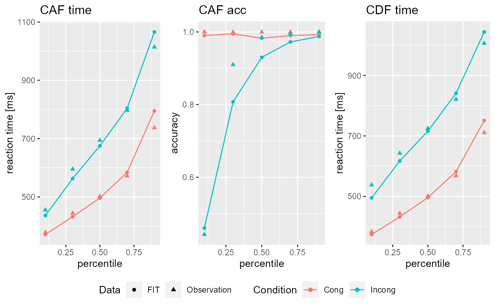

vignettes/Tutorials/Fitting_models.Rmd
Fitting_models.RmdIn order to fit something with DDModeling, you need at least your model definition in the form of a DDModel object (see here for a tutorial) and some data in the form of a DDRep object (see here for a tutorial on data import or here for one on data simulation). This allows you to perform a rather simple SIMPLEX downhill optimization. However, DDModeling allows you to use a wide range of additional features! In the following, most of them are presented, starting with the least complex ones and ending with deep learning-based procedures
All of the following examples use the same DDModel and DDRep:
library(DDModeling) #> Lade nötiges Paket: data.table DSTP <- DDModel(model="DSTP",task = "flanker",CDF_perc = c(0.1,0.3,0.5,0.7,0.9),CAF_perc = c(0.0,0.2,0.4,0.6,0.8,1.0)) DATA <- Sim_DDModel(model = DSTP, trials = 2000L, simulations = 1L)
Let us start with a random SIMPLEX routine! A SIMPLEX routine is a quite common and established downhill algorithm. The adjective Random indicates that the algorithm is initialized randomly (i.e. its starting values).
All following examples use the Fit_DDModel() function, which you will see in the course of this tutorial is a heavily overloaded and flexible function! For the task at hand it needs only five arguments: model, data, s_sampling, trials and simplex_struc. While the first two arguments should be intuitive and refer to the DDModel or the data to be fit, the last three need further explanation. s_sampling is a logical specification of whether to use super-sampling during the fitting. Existing research will choose s_sampling = FALSE in most, if not all cases, but I have found (in as yet unpublished research) that it may proof beneficial! With s_sampling = FALSE SIMPLEX simulates with the given number of trials for each calculation. If you choose s_sampling = TRUE, the function determines the number of trials per condition in your data (let’s call it t_data) and instructs SIMPLEX to simulate trials/t_data times with t_data. The best resulting fit of these samples is used for the downhill algorithm. You will probably have noticed that depending on s_sampling the function of trials changes, but the general computational cost of experiments remains constant. Finally, simplex_struc takes a numerical vector as argument, which represents a structure of successive SIMPLEXes. For example, simplex_struc = c(1L) will initialize one SIMPLEX, simplex_struc = c(2L) two and so on. simplex_struc = c(10L,1L) will initialize 10 SIMPLEXes and then one more with the best parameters resulting from the 10 before. In the same way simplex_struc = c(10L,2L) initializes two more SIMPLEXes with the two best results of the 10 before. Note that you may only use natural numbers in descending order! For example, simplex_struc = c(1L,10L) leads to an error, because there are no 10 results which the second iteration may refer to.
With all this said and done, let us fit some!
Fit_rand_1 <- Fit_DDModel(model = DSTP, data = DATA, s_sampling = FALSE, trials = 2000L, simplex_struc = c(1L)) Fit_rand_2 <- Fit_DDModel(model = DSTP, data = DATA, s_sampling = FALSE, trials = 2000L, simplex_struc = c(10L)) Fit_rand_3 <- Fit_DDModel(model = DSTP, data = DATA, s_sampling = FALSE, trials = 2000L, simplex_struc = c(10L,2L)) Fit_rand_4 <- Fit_DDModel(model = DSTP, data = DATA, s_sampling = FALSE, trials = 2000L, simplex_struc = c(10L,2L,1L))
Fit_DDModel() will return a DDFit object that can be called by name or inspected using the summary() or plot() functions.
summary(Fit_rand_1) #> $INPUT_Par #> Ter a c mu_t mu_f mu_RS2 mu_SS #> 1 0.2336057 0.2065998 0.2886497 0.1042351 0.2252235 0.4136228 0.63632 #> #> $FIT_Par #> Ter a c mu_t mu_f mu_RS2 mu_SS #> 1 0.2650207 0.1576541 0.2848453 0.1279097 0.157591 0.2957905 0.5630794 #> #> $Eta #> Ter a c mu_t mu_f mu_RS2 mu_SS #> 1 0.1047168 0.2039401 0.01585164 0.2367468 0.3381628 0.3927742 0.09155082 #> #> $mean_Eta #> [1] 0.1976776 #> #> $Fit #> [1] 0.04991885 plot(Fit_rand_1) #> Fit: 0.04991885

Fit_rand_1@FIT@FIT_V #> [1] 0.04991885 Fit_rand_2@FIT@FIT_V #> [1] 0.007508278 Fit_rand_3@FIT@FIT_V #> [1] 0.009350927 Fit_rand_4@FIT@FIT_V #> [1] 0.006638774
Note how the fit gets better the more sophisticated the SIMPLEX structure gets! However DDModeling does not stop here, let us take a look at more complex solutions!
The GRID SIMPLEX is analogue to the Random SIMPLEX only that the SIMPLEX will be initialized based upon a already calculated GRID (see here for a tutorial). The GRID simply needs to be specified under the grid_path argument.
Grid_DSTP <- Generate_GRID(model = DSTP, path = getwd(), name = "DSTP_Flanker", eval_pts = rep(2,ncol(DSTP@DM))) Fit_grid_1 <- Fit_DDModel(model = DSTP, data = DATA, grid_path = Grid_DSTP, s_sampling = FALSE, trials = 2000L, simplex_struc = c(1L)) Fit_grid_2 <- Fit_DDModel(model = DSTP, data = DATA, grid_path = Grid_DSTP, s_sampling = FALSE, trials = 2000L, simplex_struc = c(10L)) Fit_grid_3 <- Fit_DDModel(model = DSTP, data = DATA, grid_path = Grid_DSTP, s_sampling = FALSE, trials = 2000L, simplex_struc = c(10L,2L)) Fit_grid_4 <- Fit_DDModel(model = DSTP, data = DATA, grid_path = Grid_DSTP, s_sampling = FALSE, trials = 2000L, simplex_struc = c(10L,2L,1L))
Of course you do not need to use an additional SIMPLEX after the GRID search! Simply set simplex_struc = c(0) to only use the GRID in itself as a fitting procedure!
Fit_grid <- Fit_DDModel(model = DSTP, data = DATA, grid_path = Grid_DSTP, s_sampling = FALSE, trials = 2000L, simplex_struc = c(0L))
Finally you can use a predefined deep learning model (see here) to initialize your SIMPLEX by simply referencing it under the DL_model argument! Additionally I highly recommend to scale your learning data. DDModeling gives you the opportunity to simply rescale data while fitting using the DL_scale argument.
library(keras) LEARN_DATA <- Import_GRID(grid_path = Grid_DSTP,to = "keras_data") LEARN_DATA$INPUT <- scale(LEARN_DATA$INPUT) LEARN_DATA$OUTPUT <- scale(LEARN_DATA$OUPUT) LEARN_DATA_scale <- Scale_DL_Data(data = LEARN_DATA) model <- keras_model_sequential() %>% layer_dense(input_shape=ncol(LEARN_DATA$INPUT),units = 10, activation = "relu") %>% layer_batch_normalization() %>% layer_dropout(rate = 0.1) %>% layer_dense(units = 20, activation = "relu") %>% layer_batch_normalization() %>% layer_dropout(rate = 0.2) %>% layer_dense(units = ncol(LEARN_DATA$OUTPUT),activation = "linear") model %>% compile( loss = "mean_squared_error", optimizer = "adam", metrics = list("mae","mape") ) model %>% fit( x = LEARN_DATA$INPUT, y = LEARN_DATA$OUTPUT, epochs = 50, batch_size = 16, verbose = 1, validation_split = 0.1, shuffle = TRUE, callbacks = list( callback_reduce_lr_on_plateau(factor = 0.05) ) ) Fit_DL <- Fit_DDModel(model = DSTP, data = DATA, DL_model = model, DL_scale = LEARN_DATA_scale, s_sampling = FALSE, trials = 2000L, simplex_struc = c(1L))